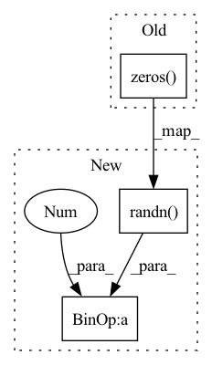

Pattern ID :1924

Before Change
super().__init__()
self.output_dim = output_dim
self.t_param = torch.nn.Parameter(torch.zeros(output_dim),requires_grad = True)
self.sigma = torch.nn.Parameter(torch.ones(1),requires_grad = True)
def forward(self,x):
After Change
self.output_dim = output_dim
self.t_param = torch.nn.Parameter(
torch.randn(output_dim)*0.1, requires_grad=True)
self.sigma = torch.nn.Parameter(torch.ones(1), requires_grad=True)
def forward(self, x):
In pattern: SUPERPATTERN
Frequency: 3
Non-data size: 3
Instances
Fragment ID: 4613366
Project Name: borgwardtlab/togl
Commit Name: 9fccd13dedaed47d541891435f9bdc2574973ca7
Time: 2021-02-03
Author: max.horn@bsse.ethz.ch
File Name: topognn/coord_transforms.py
Class Name: Gaussian_transform
Method Name: __init__
Parent Class: nn.Module
Fragment ID: 4613367
Project Name: borgwardtlab/togl
Commit Name: 9fccd13dedaed47d541891435f9bdc2574973ca7
Time: 2021-02-03
Author: max.horn@bsse.ethz.ch
File Name: topognn/coord_transforms.py
Class Name: RationalHat_transform
Method Name: __init__
Parent Class: nn.Module
Fragment ID: 4613365
Project Name: borgwardtlab/togl
Commit Name: 9fccd13dedaed47d541891435f9bdc2574973ca7
Time: 2021-02-03
Author: max.horn@bsse.ethz.ch
File Name: topognn/coord_transforms.py
Class Name: Triangle_transform
Method Name: __init__
Parent Class: nn.Module